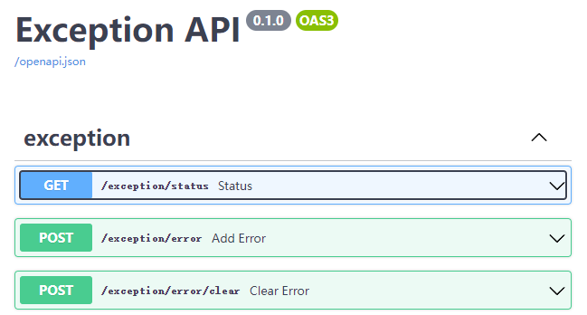
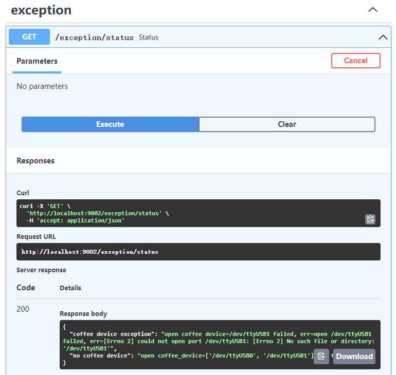

Get Start¶
before start¶
goto Config Env to adapt the local robot environment.
goto Service to understand the meaning of all services.
goto https://www.youtube.com/watch?v=Nymyc8-WeHM to learn how to use swaggerUI.
use exception interface¶
refer to Interface Url to see exception url, open exception url, you will see following:
Click “Try it out” then click “Execute”, I get this response.
This status interface collect all critical exception in this project(not completed).
If there is no exception return, we can try another service interface.
use coffee interface¶
refer to Interface Url to see coffee url, open it.
you can test /coffee/make interface to see coffee machine corresponding.
use audio interface¶
refer to Interface Url to see audio url, open it.
you can test /audio/tts interface let adam speaking.
use adam interface¶
refer to Interface Url to see adam url, open it.
When adam service start successfully, it will control two arms goto initial position.
Use adam interface is dangerous, I advice you not use /adam/angle and /adam/position.
Let’s use /adam/position/initial interface to test, select left or right arm, and set angle is 30, execute it.
use center interface¶
If above Interface test ok, we can use center interface to create a order, it can control adam arm to get cup, control coffee to make coffee and speak words when completed.